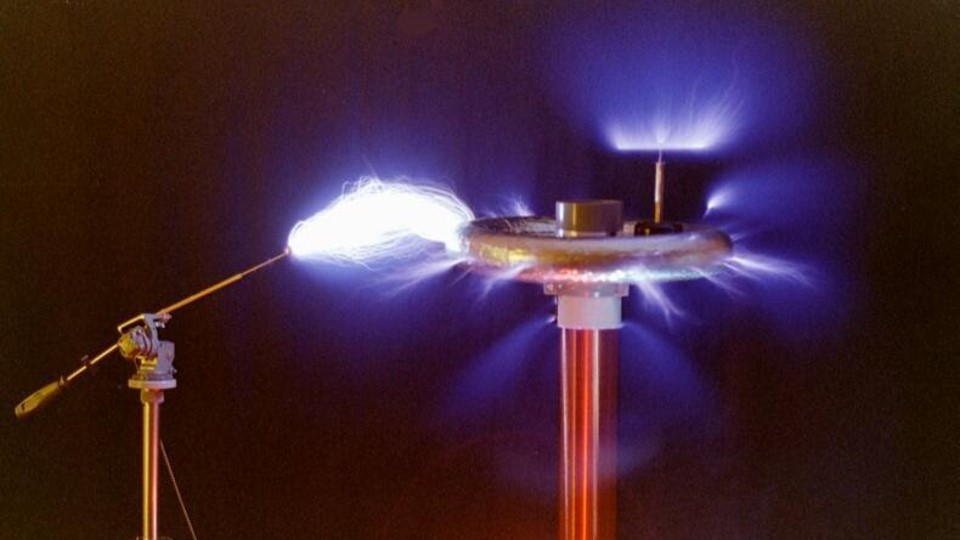

Godina: 1893
Teslin elektro-mehanički oscilator parni je električni generator koji je patentirao Nikola Tesla 1893. Kasnije u životu Tesla je tvrdio da je jedna verzija oscilatora izazvala potres u New Yorku 1898. godine, stekavši mu naslov popularne kulture "Teslin potresni stroj". Teslin oscilator je klipni generator električne energije. Para bi se prisiljavala u oscilator i izlazila kroz niz otvora, gurajući klip gore-dolje koji je bio pričvršćen na armaturu, uzrokujući da titra gore-dolje velikom brzinom, proizvodeći električnu energiju. Tesla je razvio mnoge verzije oscilatora i na njega je gledao kao na moguću zamjenu za neučinkovite klipne parne strojeve koji se koriste za okretanje generatora, ali ga je zamijenio razvoj vrlo učinkovitih parnih turbina. Tesla je također koristio vrlo redovito prilagodljivo osciliranje uređaja za postavljanje frekvencije u svojim eksperimentima s električnim i bežičnim prijenosom visoke frekvencije.